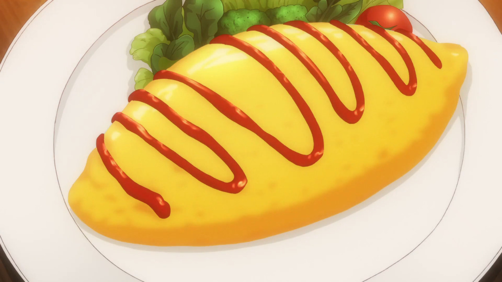
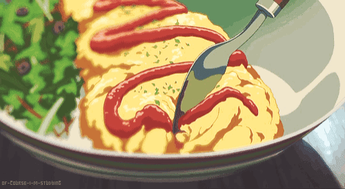

main page
Omurice

Ingredients
- 1/2 onion
- 1 boneless, skinless chicken thigh
- 1 Tbsp extra-virgin olive oil
- 1/2 cup frozen mixed vegetables
- 1/8 tsp kosher/sea salt
- 2 servings cooked Japanese short-grain rice
- 1 Tbsp ketchup
- 1 tsp soy sauce
Steps
- Whisk 1 egg and 1 Tbsp milk in a small bowl
- Heat 1 Tbsp olive oil in the pan over medium high heat
- When the pan is hot, pour the egg mixture into the pan and tilt to cover the bottom of the pan. Lower the heat when the bottom of the egg has set
- Put the 3 Tbsp cheese and half of the ketchup fried rice on top of the omelete
- Use the spatula to fold both sides of omelette toward the middle to cover the fried rice. Slowly move the omurice to the edge of the pan.
- Hold a plate in one hand and the pan in the oither hand, flip the pan and move the omurice to the plate
- While it's still hot, cover the omurice with a paper towel and shape it into American / Rugby football shape. Repeat this process to make the second omurice with the rest of ingredients
Happy eating!
